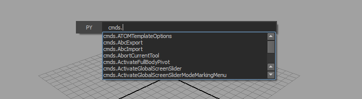
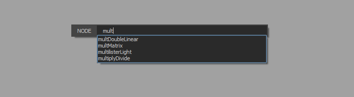
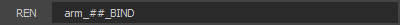
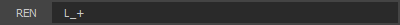
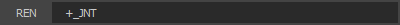
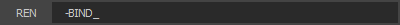
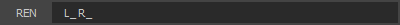

HotLine
I love popups! When used properly they can really empower a user and increase their productivity. Maya and Sketchbook have marking menus (various keys + right click) and Nuke has its node creator (tab key). I always miss these features in other applications, especially the node creator. For those of you who haven't used Nuke, the node creator is a single input field that pops up at your mouse cursor. It has drop-down completion for every node in Nuke, making it easy to search for and create nodes. A natural side-effect of placing node creation in a simple popup is reduction of UI clutter. Luckily with Maya's node editor Autodesk introduced a node creator just like Nuke's, but, it hasn't been taken far enough. It's constrained to the new node editor when it could be equally as useful everywhere.
HotLine to the rescue!
 HotLine is like a supped up node creator with plenty o' added functionality. Best of all, it works anywhere in Maya. There are currently five different modes in HotLine.
| Mode | Usage | Auto-Completes |
|---|---|---|
| PYthon | execute python script | maya.cmds module |
| MEL | execute mel script | mel commands |
| SELect | select scene nodes using standard Maya selection wildcards | scene nodes |
| REName | rename selected nodes using a mini token language | N/A |
| NODE | create scene nodes | Maya scene nodes |
Drop-down completion is enabled by default, though, I'm considering adding a configuration file to allow users to enable/disable completion for each mode. When HotLine is up you can use the Tab key to flip through modes and the Up and Down keys to flip through history.
Creating Nodes

Node creation mode is almost exactly like Nuke's node creator. Simply input the node you'd like to create and press return. There is one added feature for convenience, if you input a second string, this will be the name of the newly created node.
Renaming
The rename mode requires a bit of instruction. I created a simple token language to give users all the renaming functionality of scripts like Comet's renamer without multiple input fields. Let's go through the various tokens available in rename mode.
selected nodes: joint1, joint2, joint3

results: arm_01_BIND, arm_02_BIND, arm_03_BIND
A single string renames the selected nodes. "#" symbols are replaced with a sequence of numbers. Using multiple "#" increases the padding of the digit.

results: L_arm_01_BIND, L_arm_02_BIND, L_arm_03_BIND
"+" adds a prefix if it comes after the input string.

results: L_arm_01_BIND_JNT, L_arm_02_BIND_JNT, L_arm_03_BIND_JNT
"+" adds a suffix if it comes before the input string.

results: L_arm_01_JNT, L_arm_02_JNT, L_arm_03_JNT
Removes the string following "-" from each of the selected nodes.

results: R_arm_01_JNT, R_arm_02_JNT, R_arm_03_JNT
If two strings are input, the first string is replaced by the second.
Installing HotLine
PyQt4 is required to use HotLine. Unfortunately, Autodesk compiled Python with Visual Studio 2010, which is fantastic because it means that you can't use one of the official binaries for PyQt4. Nathan Horne has links to windows binaries for PyQt4 compiled against Maya 2013 and Maya 2012, these will work just fine.
After you've installed PyQt4 installation of HotLine is simple. Just take hotline.py and place it in your Maya scripts directory. Set any key to run the following Python script, I use h:
import maya.cmds as cmds try: hl.enter() except: from hotline import HotLine hl = HotLine() hl.enter()